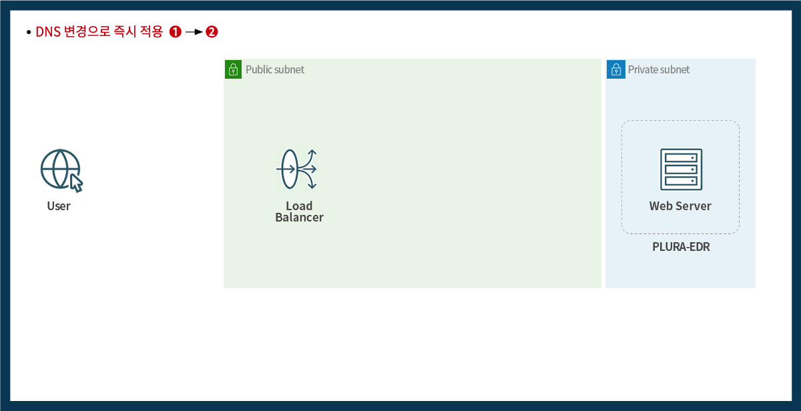

Credential Stuffing
계정 탈취·웹 우회 공격·서버 침투 징후를
WAF·EDR·SIEM·Forensic으로 즉시 연결 분석합니다.
계정 탈취·웹 우회 공격·서버 침투 징후를
WAF·EDR·SIEM·Forensic으로 즉시 연결 분석합니다.

지금 공격을 받고 있습니까?📚
DNS 전환만으로 웹방화벽(PLURA-WAF)을 빠르게 적용
요청·응답 본문과 로그인 행위를 분석해 계정 탈취·데이터 유출 징후 추적
호스트보안(PLURA-EDR)으로 서버·PC의 프로세스·파일·네트워크 행위 수집
PLURA-SIEM·Forensic으로 공격 흐름을 상관 분석하고 증거화

PLURA는 웹방화벽 차단 이벤트에 머물지 않고, 로그인 행위·호스트 이벤트·포렌식 아티팩트를 함께 분석해 공격 흐름을 설명합니다.
| 공격 유형 | 주요 징후 | PLURA 대응 |
|---|---|---|
| 크리덴셜 스터핑 | 다수 계정 로그인 시도, 성공 후 비정상 URL 접근, IP·속도 이상 | WAF 로그인 행위 분석 + SIEM 계정 상관 + 정책 기반 차단 |
| 웹 우회 공격 | 인코딩·분할·본문 기반 우회, SQLi/XSS/파일 업로드 시도 | 요청 본문 분석 + OWASP 위험 탐지 + 제로데이 징후 분석 |
| 웹셸·서버 침투 | 업로드 이후 프로세스 실행, 의심 파일 생성, 외부 연결 | WAF 이벤트를 EDR·Forensic으로 확장해 침투 여부 확인 |
| 랜섬웨어·데이터 유출 | 대량 파일 접근, 민감정보 응답, 비정상 전송·압축·암호화 행위 | SIEM 상관 분석 + EDR 행위 탐지 + Forensic 증거 보존 |
| 비교 항목 | 기존 대응 방식 | PLURA-AI·XDR |
|---|---|---|
| 탐지 기준 | 개별 장비 경보 중심 한계 | 웹·계정·호스트·포렌식 로그 연결 분석 강화 |
| 계정 탈취 대응 | 실패 횟수·IP 차단 중심 제한 | 로그인 성공 이후 행위까지 상관 분석 우수 |
| 웹 공격 이후 분석 | WAF 경보 확인에 그침 부족 | EDR·Forensic으로 서버 침투 여부 확인 우수 |
| 증거화 | 사후 수동 조사 의존 지연 | 탐지 시점부터 로그·스냅샷·아티팩트 보존 지원 |
| 운영 방식 | 담당자 판단과 수동 대응 중심 부담 | AI 분석·정책 차단·SOC 연계로 대응 흐름 표준화 강화 |